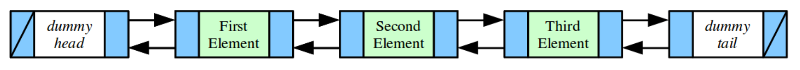

Grab a pencil and paper, or a whiteboard, or a reed and papyrus when you’re reading over these solutions. The pointer juggling here is intricate but beautiful, like a delicate flower. If you work through everything one line at a time, you’ll get a much deeper sense for what’s going on here. Simply reading over this code and trying to keep track of everything in your head is not likely to work out very well.
Problem One: Linked List Mechanics
This section handout is almost exclusively about linked lists, so before we jump into some of their applications, let’s start off by reviewing some of the basic mechanics about how they work!
To begin with, let’s imagine we have a linked list of integers. Go and define a Cell struct representing a single cell in the linked list. Then, write a function
int sumOfElementsIn(Cell* list);
that adds up the values of all the elements in the linked list. Write this function two ways – first, do it iteratively; then, do it recursively. Which one did you think was easier to write? Why?
Next, write a function
Cell* lastElementOf(Cell* list);
that returns a pointer to the last element of a linked list (and reports an error if the list is empty). Again, write this function two ways, iteratively and recursively. Which one did you think was easier to write?
First, we need a Cell structure! Here’s one possibility:
struct Cell {
int value;
Cell* next;
};
Most linked list cells look more or less the same – they have some data and a pointer to the next element in the list. Here’s two version of the code to sum up the elements of one of these lists:
/* Iterative version */
int sumOfElementsIn(Cell* list) {
int result = 0;
for (Cell* curr = list; curr != nullptr; curr = curr->next) {
result += curr->value;
}
return result;
}
/* Recursive version. */
int sumOfElementsIn(Cell* list) {
/* The sum of the elements in an empty list is zero. */
if (list == nullptr) return 0;
/* The sum of the elements in a nonempty list is the sum of the elements in
* the first cell plus the sum of the remaining elements.
*/
return list->value + sumOfElementsIn(list->next);
}
And two versions of a function to get the last element of a linked list.
/* Iterative version */
Cell* lastElementOf(Cell* list) {
if (list == nullptr) error("Empty lists have no last element.");
/* Loop forward until the current cell’s next pointer is null. That’s the
* point where the list ends.
*/
Cell* result = list;
while (result->next != nullptr) {
result = result->next;
}
return result;
}
/* Recursive version. */
Cell* lastElementOf(Cell* list) {
/* Base Case 1: The empty list has no last element. */
if (list == nullptr) error("Nothing can come from nothing.");
/* Base Case 2: The only element of a one-element list is the last element. */
if (list->next == nullptr) return list;
/* Recursive Case: There’s at least two cells in this list. The last element
* of the overall list is the last element of the list you get when you drop
* off the first element.
*/
return lastElementOf(list->next);
}
Problem Two: Tail Pointers
In lecture, we wrote a function to read a list of values from the user and return a linked list containing those values (and we wrote it two different ways, too!) The iterative version of that function had the odd property that it returned the elements that were read in reverse order, which was a consequence of the fact that we kept adding elements at the front of the list that we’d made.
Write an iterative function
Cell* readList();
that reads a list of values from the user. It should return a linked list containing those values in the order in which they were entered. To make it run in time O(n), where n is the number of elements read, maintain a tail pointer keep track of the very last element in the list.
Here’s one option, which is closely related to our logic to get the queue to work in worst-case O(1) time. I’m assuming the list holds strings, but really this’ll work for any type as long as there’s a sentinel value:
Cell* readList() {
Cell* head = nullptr;
Cell* tail = nullptr; // There is no last element... at least, not yet. :-)
while (true) {
string line = getLine("Next entry: ");
if (line == "") break;
/* Get the cell basics set up. It always goes on the end, so its next
* pointer is always null.
*/
Cell* cell = new Cell;
cell->value = line;
cell->next = nullptr;
/* If the list is empty, this is now both the head and the tail. */
if (head == nullptr) {
head = tail = cell;
}
/* Otherwise, splice this element in right after the tail. */
else {
tail->next = cell;
tail = cell;
}
}
return head;
}
Problem Three: Pointers by Reference
One of the trickier nuances of linked lists comes up when we start passing around pointers as parameters by reference. To better understand exactly what that’s all about, trace through the following code and show what it prints out. Also, identify any memory leaks that occur in the program.
void confuse(Cell* list) {
list->value = 137;
}
void befuddle(Cell* list) {
list = new Cell;
list->value = 42;
list->next = nullptr;
}
void confound(Cell* list) {
list->next = new Cell;
list->next->value = 2718;
list->next->next = nullptr;
}
void bamboozle(Cell*& list) {
list->value = 42;
}
void mystify(Cell*& list) {
list = new Cell;
list->value = 161;
list->next = nullptr;
}
int main() {
Cell* list = /* some logic to make the list 1 → 3 → 5 → null */
confuse(list);
printList(list); // from lecture
befuddle(list);
printList(list);
confound(list);
printList(list);
bamboozle(list);
printList(list);
mystify(list);
printList(list);
freeList(list); // from lecture
return 0;
}
Let’s go through this one step at a time.
- The call to
confuseupdates the first element of the list to store 137, so the call toprintListwill print out 137, 3, 5. - The call to
befuddletakes its argument by value. That means it’s working with a copy of the pointer to the first element of the list, so when we set list to be a new cell, it doesn’t change where the list variable back in main is pointing. The cell created here is leaked, and the next call toprintListwill print out 137, 3, 5. - The call to
confoundtakes its argument by value. However, when it writes tolist->next, it’s following the pointer to the first element of the linked list and changing the actual linked list cell it finds there. This means that the list is modified by dropping off the 3 and the 5 (that memory gets leaked) and replacing it with a cell containing 2718. Therefore, the next call toprintListwill print out 137, 2718. - The call to
bamboozletakes its argument by reference, but notice that it never actually reassigns the next pointer. However, it does change the memory in the cell at the front of the list to hold 42, so the next call toprintListwill print 42, 2718. - The call to
mystifytakes its argument by reference and therefore when it reassigns list it really is changing where list back in main is pointing. This leaks the memory for the cells containing 42 and 2718. The variable list back in main is changed to point at a new cell containing 161, so the final call toprintListprints 161. - Finally, we free that one-element list. Overall, we’ve leaked a lot of memory!
Problem Four: Concatenating Linked Lists
Write a function
Cell* concat(Cell* one, Cell* two);
that takes as input two linked lists, then concatenates the second list onto the back of the first linked list. Your function should return a pointer to the first element in the resulting list.
Then, update the function so that it has this signature:
void concat(Cell*& one, Cell* two);
This function should proceed as before, except that instead of returning the new head of the linked list, it changes the pointer given as a first parameter so that it holds the new head of the combined list. Then, answer this question: why didn’t we make two a reference parameter as well?
Here’s one possible solution using that nice and handy function we wrote in Problem One of this section handout! It’s a great exercise to do this from first principles as well.
Cell* concat(Cell* one, Cell* two) {
/* If the first list is empty, then the result is just the second list. */
if (one == nullptr) return two;
/* Otherwise, take the last element of the first list and have it point to
* the first element of the second list. The first element overall is
* unchanged.
*/
lastElementOf(one)->next = two;
return one;
}
If we opt to use reference parameters, the core logic is the same, but the execution is a bit different:
void concat(Cell*& one, Cell* two) {
if (one == nullptr) {
one = two;
} else {
lastElementOf(one)->next = two;
}
}
Problem Five: The Classic Interview Question
Here’s a classic interview question that’s so overused that it’s almost an in-joke among software engineers: write a function that reverses a linked list. Do it both iteratively and recursively, and aim to get your code to run in time O(n).
Here’s an iterative version of the function. It’s remarkably similar to the code we came up with to read in the contents of a linked list from the user, except that the elements that we read get pulled off of the main linked list.
void reverse(Cell*& list) {
Cell* head = nullptr; // New pointer to the head of the linked list.
while (list != nullptr) {
/* Store the next element of the list in an auxiliary pointer so we don’t
* lose it in the next step.
*/
Cell* next = list->next;
/* Move this cell onto the front of the new list we’re building. */
list->next = head;
head = list;
/* Move to the new front of the old linked list. */
list = next;
}
list = head;
}
Recursively, the idea is to pull the first element off the list, recursively reverse the rest of the list, then tack the new element onto the end of the list. To make things run quickly, we’ll have the recursive logic return a pointer to the very last element of the reversed list so that we can put the cell that used to be at the front of the list into its proper place.
/* Reverses a linked list and returns a pointer to its last element. */
Cell* reverseRec(Cell* list) {
/* Base Case 1: An empty or single-element list is its own reverse. */
if (list == nullptr || list->next == nullptr) return list;
/* Recursive Case: Pull this element off the list and reverse what’s left. */
Cell* last = reverseRec(list->next);
/* We know that last is non-null, because this list has at least two elements.
* So tack this element onto the back.
*/
last->next = list;
/* Finally, remember that we’re now at the back. */
list->next = nullptr;
return list;
}
void reverse(Cell*& list) {
/* Store the last element for later use – we’ll need to update the list head
* pointer at the end.
*/
Cell* result = lastElementOf(list);
reverseRec(list);
list = result;
}
Problem Six: Doubly-Linked Lists
The linked lists we talked about in lecture are called singly-linked lists because each cell just stores a single link pointer, namely, one to the next element in the list. A common variant on linked lists is the doubly-linked list, where each cell stores two pointers – a pointer to the next element in the list (as before) and a pointer to the previous element in the list. Here’s what a cell in a doubly-linked list might look like:
struct DoublyLinkedCell {
string value; // Or whatever type of data goes here
DoublyLinkedCell* next;
DoublyLinkedCell* prev;
};
Doubly-linked lists have one really nice property: it is really easy to splice a new element into or out of a doubly-linked list. Write a function
void insertBefore(DoublyLinkedCell*& head, DoublyLinkedCell* beforeMe, DoublyLinkedCell* newCell);
that takes as input a pointer to the first element in a doubly-linked list, a pointer to a cell somewhere in the linked list (beforeMe), and a newly-allocated Cell object, then splices the new cell into the doubly-linked list right before the cell beforeMe. Your function should update head so that when the function returns, it still points at the first cell in the linked list. (Why is it necessary to pass in the head of the list?) You can assume that beforeMe is not null.
To splice something into the list right before some point, we need to juggle the pointers so that whatever comes before us knows to route into us and whatever comes after us knows to step backwards into us. Here’s what that looks like:
void insertBefore(DoublyLinkedCell*& head, DoublyLinkedCell* beforeMe, DoublyLinkedCell* newCell) {
/* If we’re inserting before the head, there is no preceding cell, so we need
* to special-case the logic.
*/
if (beforeMe == head) {
newCell->next = head;
newCell->prev = nullptr;
head->prev = newCell;
head = newCell;
}
/* Otherwise, four pointers need to change: our own next/previous pointers so
* so that this cell fits nicely into the list, plus the next field of the
* cell before us and the prev field of the cell after us. We have to be
* careful with the order in which we do this, though!
*/
else {
newCell->prev = beforeMe->prev;
newCell->next = beforeMe;
newCell->prev->next = newCell;
newCell->next->prev = newCell;
}
}
Problem Seven: Dummy Nodes
When working with linked lists, it’s common to encounter some weird edge cases when growing a zero-element list into a one-element list or shrinking a one-element list to a zero-element list, since in those cases you typically need to modify some external head and tail pointers. One technique that simplifies the logic in these cases is to add dummy nodes to the linked list. A dummy node is a node that’s technically a part of a linked list, but is specifically intended to signify “the start of the list” or “the end of the list.”
For example, let’s imagine we have a doubly-linked list. We might insert dummy nodes before the first element of the list and after the last element of the list, as shown here: 
First, write a function
DoublyLinkedCell* makeEmptyList();
that creates a new doubly-linked list with a dummy head and tail, then returns a pointer to the head.
Now, write a function
void printList(DoublyLinkedCell* head, DoublyLinkedCell* tail);
that prints out the contents of a doubly-linked list whose dummy first and last elements are pointed at by the head and tail parameters. Next, write a pair of functions
void insertBefore(DoublyLinkedCell* newCell, DoublyLinkedCell* beforeMe);
void insertAfter(DoublyLinkedCell* newCell, DoublyLinkedCell* afterMe);
that take as inputs a newly-allocated cell to insert into the list and a cell that comes right after or right before the cell to insert, then splices the new cell into the list. You can assume that no one will try to insert anything before the head or after the tail, though they could do something like insert before the tail or after the head to append or prepend a new cell to the list.
Next, write a pair of functions
void append(DoublyLinkedCell* tail, DoublyLinkedCell* newCell);
void prepend(DoublyLinkedCell* head, DoublyLinkedCell* newCell);
that insert the specified element at the beginning or end of the linked list. Then, write a function
void remove(DoublyLinkedCell* toRemove);
that removes an element from a doubly-linked list with a dummy head and tail and deallocates the cell. Finally, write a function
void freeList(DoublyLinkedCell* head);
that frees the list whose first element is head.
How did that compare with the regular doubly-linked list from before?
The makeEmptyList function is rather easy to write, since we just make two nodes and wire them together.
DoublyLinkedCell* makeEmptyList() {
DoublyLinkedCell* head = new DoublyLinkedCell;
DoublyLinkedCell* tail = new DoublyLinkedCell;
head->next = tail;
tail->prev = head;
head->prev = tail->next = nullptr;
return head;
}
To print out the list, we start one step past the head and stop as soon as we get to the tail. Here’s both an iterative and a recursive version of this code, just for funzies:
/* * * * * Iteratively * * * * */
void printList(DoublyLinkedCell* head, DoublyLinkedCell* tail) {
for (DoublyLinkedCell* curr = head->next; curr != tail; curr = curr->next) {
cout << curr->value << endl;
}
}
/* * * * * Recursively * * * * */
void printRec(DoublyLinkedCell* curr, DoublyLinkedCell* tail) {
if (curr == tail) return;
cout << curr->value << endl;
printRec(curr->next, tail);
}
void printList(DoublyLinkedCell* head, DoublyLinkedCell* tail) {
printRec(head->next, tail);
}
The insertBefore and insertAfter functions are dramatically easier to write than what we saw in the previous problem simply because we can eliminate the edge case of having to change the head pointer (it always points to the dummy node regardless of what the logically first element of the list is) or tail pointer. Notice that we don’t even need to know what the head or tail are! Maybe we’re inserting right before or right after them – we don’t know, and we don’t need to care!
void insertBefore(DoublyLinkedCell* newCell, DoublyLinkedCell* beforeMe) {
newCell->next = beforeMe;
newCell->prev = beforeMe->prev;
newCell->next->prev = newCell;
newCell->prev->next = newCell;
}
void insertAfter(DoublyLinkedCell* newCell, DoublyLinkedCell* afterMe) {
newCell->prev = afterMe;
newCell->next = afterMe->next;
newCell->next->prev = newCell;
newCell->prev->next = newCell;
}
The nifty part is that we can easily use the above code to implement append and prepend. Look at this!
void append(DoublyLinkedCell* tail, DoublyLinkedCell* newCell) {
insertBefore(newCell, tail);
}
void prepend(DoublyLinkedCell* head, DoublyLinkedCell* newCell) {
insertAfter(newCell, head);
}
And how do we remove something? Well, we know that there will always be a node right before or right after us, so we can just splice around the node to remove!
void remove(DoublyLinkedCell* toRemove) {
toRemove->next->prev = toRemove->prev;
toRemove->prev->next = toRemove->next;
delete toRemove;
}
The best part is that deleting one of these linked lists is exactly the same as deleting a regular linked list – the dummy nodes are nodes just like any other node, so we just iterate across them and free them. In fact, since it’s literally the same code as in the regular case, I’m not going to include any code here for it, since that would just be duplicating the code from lecture. ☺
Linked lists with dummy nodes are used extensively in systems programming. If you take CS140, for example, you’ll use them to represent different processes running in the operating system moving between different states.
Problem Eight: Double-Ended Queues
This problem concerns a data structure called a double-ended queue, or deque for short (it’s pronounced “deck,” as in a deck of cards). A deque is similar to a stack or queue in that it represents a sequence of elements, except that elements can be added or removed from both ends of the deque. Here is one possible interface for a Deque class:
class Deque {
public:
Deque();
~Deque();
/* Seems like all containers have the next two functions. :-) */
bool isEmpty() const;
int size() const;
/* Adds a value to the front or the back of the deque. */
void pushFront(int value);
void pushBack(int value);
/* Looks at, but does not remove, the first/last element of the deque. */
int peekFront() const;
int peekBack() const;
/* Returns and removes the first or last element of the deque. */
int popFront();
int popBack();
};
One efficient way of implementing a deque is as a doubly-linked list. The deque stores pointers to the head and the tail of the list to support fast access to both ends. Design the private section of the Deque class, then implement the above member functions using a doubly-linked list. As a hint, this is way easier to do using dummy nodes!
If you think about it, the logic from the previous problem really nicely lets us build a deque – we have the ability to splice things in anywhere we want and splice things out anywhere we want, which is precisely what we’d need to do here.
This solution uses a doubly-linked list with a dummy head and tail node, as described in Problem Eight.
class Deque {
public:
Deque();
~Deque();
/* Seems like all containers have the next two functions. :-) */
bool isEmpty() const;
int size() const;
/* Adds a value to the front or the back of the deque. */
void pushFront(int value);
void pushBack(int value);
/* Looks at, but does not remove, the first/last element of the deque. */
int peekFront() const;
int peekBack() const;
/* Returns and removes the first or last element of the deque. */
int popFront();
int popBack();
private:
struct Cell {
int value;
Cell* next;
Cell* prev;
};
Cell* head;
Cell* tail;
int numElems; // Cache for efficiency; makes size() run in time O(1).
/* Creates a new cell initialized to a given value, but whose next and prev
* pointers are uninitialized. This cell is intended to be used inside the
* linked list, and therefore the size field is adjusted appropriately.
*/
Cell* makeCell(int value);
/* Destroys the given cell, which is presumed to be in the linked list. */
void destroy(Cell* toRemove);
};
Now, the .cpp file:
#include "error.h" // Because bad things happen.
Deque::Deque() {
/* Set up the empty dummied, doubly-linked list. */
head = new Cell;
tail = new Cell;
head->next = tail;
tail->prev = head;
head->prev = tail->next = nullptr;
numElems = 0;
}
Deque::~Deque() {
/* Delete all cells in the list, including the head and tail. */
while (head != nullptr) {
Cell* next = head->next;
delete head;
head = next;
}
}
/* Because we’ve cached the size, we don’t need to scan through the list when
* we want to determine how many elements there are.
*/
int Deque::size() const {
return numElems;
}
/* Good programming exercise: suppose that we didn’t cache the number of elements
* in the list and that size() had to scan over the entire list in time O(n). How
* would you implement isEmpty() given that we have a head and tail pointer?
*/
bool Deque::isEmpty() const {
return size() == 0;
}
/* Our helper function that makes a cell. We could have alternatively defined a
* constructor on the Cell type (yes, you can do that!), but I chose to do things
* this way to show off Yet Another Memorable Piece of C++ Syntax. Since the
* Cell type is nested inside Deque, the return type of this function has to be
* Deque::Cell*, indicating that Cell is defined inside of Deque.
*/
Deque::Cell* Deque::makeCell(int value) {
Cell* result = new Cell;
result->value = value;
numElems++;
return result;
}
/* * * * * Continued on the next page * * * * */
/* pushFront is essentially insertAfter with the head pointer. */
void Deque::pushFront(int value) {
Cell* cell = makeCell(value);
cell->prev = head;
cell->next = head->next;
cell->prev->next = cell;
cell->next->prev = cell;
}
/* pushBack is essentially insertBefore with the tail pointer. */
void Deque::pushBack(int value) {
Cell* cell = makeCell(value);
cell->next = tail;
cell->prev = tail->prev;
cell->prev->next = cell;
cell->next->prev = cell;
}
/* To look at the front or back, we have to skip over the head or tail nodes,
* since they’re dummies and don’t actually have any data in them.
*/
int Deque::peekFront() const {
if (isEmpty()) error("This is why we can’t have nice things.");
return head->next->value;
}
int Deque::peekBack() const {
if (isEmpty()) error("Thanks, Obama.");
return tail->prev->value;
}
/* The destroy operation is essentially our remove function from earlier.
* Notice that we do not need to use the full name Deque::Cell here because Cell
* is an argument to a member function that’s part of the Deque type.
*/
void Deque::destroy(Cell* toRemove) {
toRemove->next->prev = toRemove->prev;
toRemove->prev->next = toRemove->next;
/* At this point it’s spliced out of the list. */
delete toRemove;
numElems--;
}
/* popFront and popBack are essentially just wrapped splice-outs. */
int Deque::popFront() {
int result = peekFront();
destroy(head->next);
return result;
}
int Deque::popBack() {
int result = peekBack();
destroy(tail->prev);
return result;
}
Problem Nine: Quicksort
The quicksort algorithm is a sorting algorithm that, in practice, tends to be one of the fastest sorts available. It’s a recursive algorithm that works as follows. If the list of values has at most one element in it, it’s already sorted and there’s nothing to do. Otherwise:
- Choose a pivot element, typically the first element of the list.
- Split the elements in the list into three groups – elements less than the pivot, elements equal to the pivot, and elements greater than the pivot.
- Recursively sort the first and last of these groups.
- Concatenate the three lists together.
Write a function
void quicksort(Cell*& list);
That accepts as input a pointer to the first cell in a singly-linked list of integers, then uses quicksort to sort the linked list into ascending order. The function should change the pointer it receives as an argument so that it points to the first cell of the new linked list. This is a fairly large piece of code, so make sure that you pick a good decomposition. With the right decomp, this code is quite easy to read.
void quicksort(Cell*& list) {
/* Determine the length of the list. If it's length 0 or 1, we're done. */
if (list == nullptr || list->next == nullptr) return;
/* Remove the first element as the pivot element. */
Cell* pivot = list;
Cell* rest = pivot->next;
/* Remove the pivot element from the list. */
pivot->next = nullptr;
/* Distribute the elements into the three lists based on whether they are
* smaller than, equal to, or greater than the pivot.
*/
Cell* smaller = nullptr;
Cell* bigger = nullptr;
partitionList(rest, smaller, pivot, bigger);
/* Recursively sort the two smaller regions. */
quicksort(smaller);
quicksort(bigger);
/* Concatenate everything together using our concatenation functions from
* before! For efficiency’s sake, we concatenate the “equal” and “greater”
* lists, then tack those onto the end of the “smaller” list. (Why?)
*/
pivot = concat(pivot, bigger);
smaller = concat(smaller, pivot);
list = smaller;
}
/* Prepends the given single cell to the given list, updating the pointer to
* the first element of that linked list.
*/
void prependCell(Cell* toPrepend, Cell*& list) {
toPrepend->next = list;
list = toPrepend;
}
void partitionList(Cell* list, Cell*& smaller, Cell*& pivot, Cell*& bigger) {
/* Distribute cells in the list into the three groups. */
while (list != nullptr) {
/* Remember the next pointer, because we're going to remove this
* element from the list it is currently in.
*/
Cell* next = list->next;
/* Determine which list this element belongs to. */
if (list->value == pivot->value) {
prependCell(list, pivot);
} else if (list->value < pivot->value) {
prependCell(list, smaller);
} else {
prependCell(list, bigger);
}
list = next;
}
}